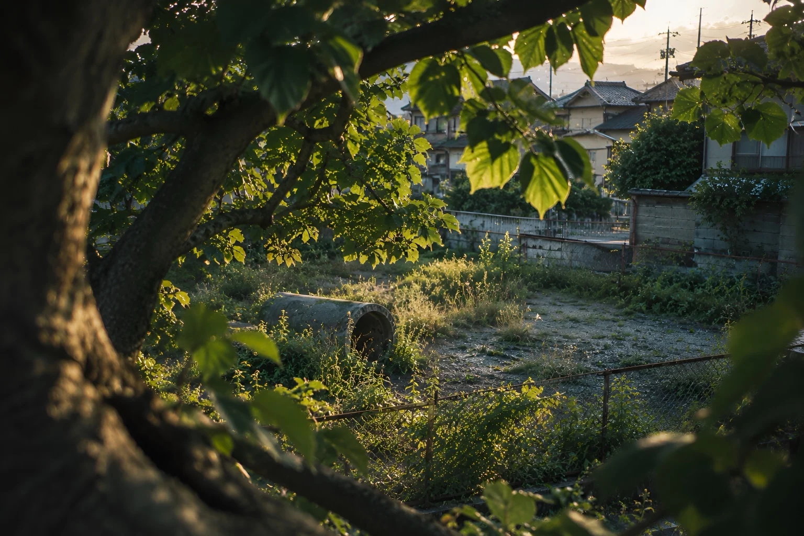

分子間力くらいの距離

全26章・完結
分子間力くらいの距離
―空き地の猫たちと、名前のつかない関係―
繁華街の裏通りで拾ったのは、猫というには少々剣呑すぎる生き物だった。猫たちと、関わるつもりのなかった人間たちの物語。
縦書き・横書き切替／文字サイズ調整／ダークモード対応
Chapters
目次
- 章情報を読み込み中です。
Beyond the text

全26章・完結
―空き地の猫たちと、名前のつかない関係―
繁華街の裏通りで拾ったのは、猫というには少々剣呑すぎる生き物だった。猫たちと、関わるつもりのなかった人間たちの物語。
縦書き・横書き切替／文字サイズ調整／ダークモード対応
Chapters
Beyond the text